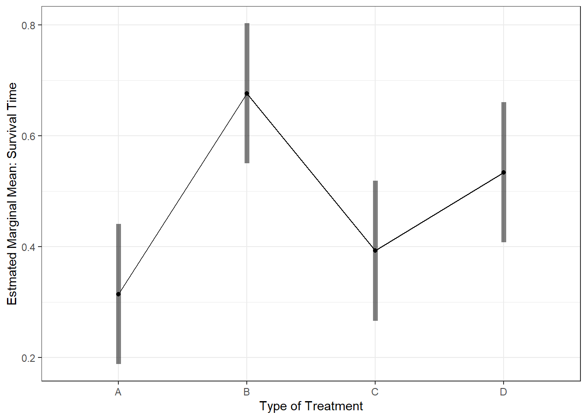

3 ONE SAMPLE t-TEST: for the MEAN
Using the t.test() function
library(psych) # lots of nice tidbits
library(car) # Compantion3.1 Exploratory Data Analysis: i.e. the eyeball method
Is the baseline weight more than 165 pounds?
3.1.1 Mean and SD
cancer_clean %>%
furniture::table1(weighin,
na.rm = FALSE)
───────────────────────────
Mean/Count (SD/%)
n = 25
weighin
178.3 (32.0)
───────────────────────────32 / sqrt(25)[1] 6.4Since the stadard deviation (\(s_X\)) is 32.0, the standard error for the mean (SEM = SE = \(s_{\overline{X}}\)) is 6.4. So even though the observed average of 178.3 is a higher number than 165, it may or may not we statistically significant.
3.2 Assumptions
3.2.1 Random Sampling
The Sample was drawn at random (at least as representative as possible)
- Nothing can be done to fix NON-representative samples!
- Can not for with any statistically test
3.2.2 Normality
A variable is said to follow the normal distribution if it resembles the normal curve. Specifically it is symetrical, unimodal, and bell shaped.
The continuous variable has a NORMAL distribution in BOTH populations
- Not as important if the sample is large (Central Limit Theorem)
- IF the sample is far from normal &/or small, might want to use a different method
Options to judging normality:
- Visualization of each sample’s distribution
- Stacked histograms, but is sensitive to binning choices (number or width)
- Side-by-side boxplots, shows median instead of mean as central line
- Seperate QQ plots (straight \(45^\circ\) line), but is sensitive to outliers!
- Calculate Skewness and Kurtosis
- Divided each value by its standard error (SE)
- A result \(\gt \pm 2\) indicates issues
- Divided each value by its standard error (SE)
- Formal Inferencial Tests for Normality
- Null-hypothesis: population is normally distributed
- A \(p \lt .05\) ???indicate snon-normality
- For smaller samples, use Shapiro-Wilk’s Test
- For larger samples, use Kolmogorov-Smirnov’s Test
cancer_clean %>%
ggplot(aes(weighin)) +
geom_histogram(binwidth = 12) +
geom_vline(xintercept = 165, # Add a thick red line at the grand mean of 165 pounds
color = "red",
size = 1) 
The histogram is not truely normal, but it is fairly unimodal and somewhat bell shaped. There are mild concerns regarding the values above the mean.
cancer_clean %>%
ggplot(aes(sample = weighin)) + # make sure to include "sample = "
geom_qq() + # layer on the dots
stat_qq_line() # layer on the line
The Q-Q Plot displays a fairly linear pattern, but there are mild concerns at the highter values.
cancer_clean %>%
dplyr::select(age, weighin) %>% # we have to select MORE than one variable
psych::describe() vars n mean sd median trimmed mad min max range skew
age 1 25 59.64 12.93 60.0 59.95 11.86 27 86.0 59.0 -0.31
weighin 2 25 178.28 31.98 172.8 176.57 21.05 124 261.4 137.4 0.73
kurtosis se
age -0.01 2.59
weighin 0.07 6.40The skew is \(0.73\) which is close to \(1\), but the kurtosis is \(0.07\) which is NOT close to \(1\). This reflects that the distribution is fairly symetrical, but more spread out and not as peaked as a truely normal distribution.
cancer_clean %>%
dplyr::pull(weighin) %>% # extract the continuous variable
shapiro.test() # test for normality (from base R)
Shapiro-Wilk normality test
data: .
W = 0.93899, p-value = 0.1403The Shapiro-Wilk’s test yielded NO evidence that weight is not normaly distributed at baseline, \(W = .939, p = .140\),.
3.3 Inference
Formal Statistical Test: t-Test for Difference in Independent Group Means
Use the t.test() funtion for a single sample.
Before you can run the t Test, you must seperate out or ‘PULL’ your variable out of the dataset.
Use the dplyr::pull(continuous_variable)step befor
running the t Test
Inside the funtion you need to specify one option:
-
the null-hypothesis value:
mu = ##(replace with your number)
You MAY need/want to specify some or all of the following options you may way to leave as the default or override:
-
Number of tails:
-
alternative = “two.sided”Default Allows for a 2-sided alternative -
alternative = “less”Only Allows: group 1 < group 2 -
alternative = “greater”Only Allows: group 1 > group 2
-
-
Confidence level:
-
conf.level = 0.95Default Computes the 95% confidence inverval
-
conf.level = 0.90Changes to a 90% confidence interval
-
3.3.1 All Defaults
Is there evidence the population mean weight is DIFFERENT than 165?
cancer_clean %>%
dplyr::pull(weighin) %>% # pull the continuous varaible out
t.test(mu = 165) # specify the null hypothesis value
One Sample t-test
data: .
t = 2.0765, df = 24, p-value = 0.04872
alternative hypothesis: true mean is not equal to 165
95 percent confidence interval:
165.0807 191.4793
sample estimates:
mean of x
178.28 There is evidence that cancer patients weight more (N = 25, M = 178.28) now than the historic average of 165 pound, \(t(24) = 2.077, p = .049, 95% CI: 165.08, 191.48\).
3.3.2 Confidence Level other than 95%
Find a 99% confience level for the population mean weight.
cancer_clean %>%
dplyr::pull(weighin) %>% # pull the continuous varaible out
t.test(mu = 165, # specify the null hypothesis value
conf.level = 0.99) # over-ride the default of 95% CI
One Sample t-test
data: .
t = 2.0765, df = 24, p-value = 0.04872
alternative hypothesis: true mean is not equal to 165
99 percent confidence interval:
160.3927 196.1673
sample estimates:
mean of x
178.28 There is evidence that cancer patients weight more (N = 25, M = 178.28) now than the historic average of 165 pound, \(t(24) = 2.077, p = .049, 99% CI: 160.39, 196.17\).
3.3.3 One-Sided Test, instead of Two
Is there evidence the population mean weight is GREATER than 165?
cancer_clean %>%
dplyr::pull(weighin) %>% # pull the continuous varaible out
t.test(mu = 165, # specify the null hypothesis value
alternative = "greater") # over-ride the default of 95% CI
One Sample t-test
data: .
t = 2.0765, df = 24, p-value = 0.02436
alternative hypothesis: true mean is greater than 165
95 percent confidence interval:
167.3384 Inf
sample estimates:
mean of x
178.28 Notice than one end of the confidence interval is Inf for infinity. This always happens when you specify a one-tail test, so you should IGNORE the conficence interval reported when you specify alternative =.
There is evidence that cancer patients weight more (N = 25, M = 178.28) now than the historic average of 165 pound, \(t(24) = 2.077, p = .024\).
3.3.4 Restrict to a Subsample
Do the patients with stage 3 and 4 cancer weigh more than 165 pounds at intake, on average?
cancer_clean %>%
dplyr::filter(stage %in% c("3", "4")) %>% # select a sub-sample
dplyr::pull(weighin) %>% # pull the continuous varaible out
t.test(mu = 165) # specify the null hypothesis value
One Sample t-test
data: .
t = 0.82627, df = 5, p-value = 0.4463
alternative hypothesis: true mean is not equal to 165
95 percent confidence interval:
137.0283 219.4717
sample estimates:
mean of x
178.25 There is NO evidence that stage three and four cancer (n = 6, M = 178.25) patients weight more now than the historic average of 165 pound, \(t(24) = 0.826, p = .446\).
3.4 Inho example
From Baron H. Cohen’s Explaining Psychological Statistics, page 196.
To review, we can easily run a one-sample t-test with a few simple lines of code.
data_ihno %>%
dplyr::pull(hr_base) %>%
t.test(mu = 72.5)
One Sample t-test
data: .
t = -0.71525, df = 99, p-value = 0.4761
alternative hypothesis: true mean is not equal to 72.5
95 percent confidence interval:
71.63194 72.90806
sample estimates:
mean of x
72.27 We can repeat this process to test any number of variables against a specified population parameter:
data_ihno %>%
dplyr::pull(hr_pre) %>%
t.test(mu = 72.5)
One Sample t-test
data: .
t = 2.6309, df = 99, p-value = 0.009878
alternative hypothesis: true mean is not equal to 72.5
95 percent confidence interval:
72.83183 74.86817
sample estimates:
mean of x
73.85 data_ihno %>%
dplyr::pull(hr_post) %>%
t.test(mu = 72.5)
One Sample t-test
data: .
t = 0.63295, df = 99, p-value = 0.5282
alternative hypothesis: true mean is not equal to 72.5
95 percent confidence interval:
71.85954 73.74046
sample estimates:
mean of x
72.8